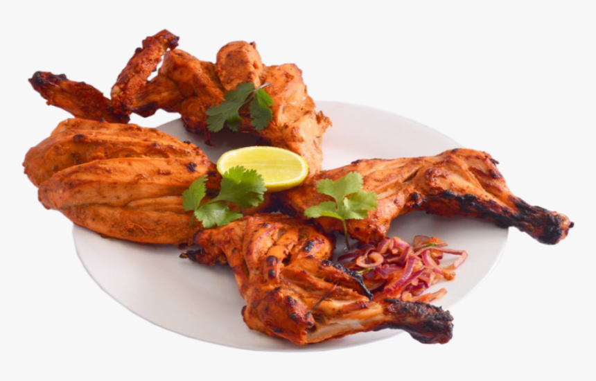

Tandoori Chicken is a popular dish where marinated chicken is grilled to
perfection in a Tandoor,a cylindrical clay oven.Any kind of heat source is good
enough to grill/roast the chicken-an oven, stovetop,air fryer or direct fire.

The key to Tandoori chicken is to use bone-in thighs and legs
because they have enough fat to stay moist under the heat of the grill.
We don't recommend this dish with chicken breasts, they'll dry out too easily.
The pieces should be skinless. Here's a trick though, if you find yourself with
extra skins,soak them in the marinade and slowly fry them until crispy. Better than bacon.
Ingredients
Ingredients required to make the item:
3 tablespoons vegetable oil
1 teaspoon ground coriander
1 teaspoon ground cumin
1 teaspoon ground turmeric
1 teaspoon cayenne
1 tablespoon garam masala
1 tablespoon sweet (not hot) paprika
1 cup plain yogurt (can sub buttermilk)
2 tablespoons lemon juice
4 garlic cloves, minced
2 tablespoons minced fresh ginger
1 teaspoon salt
4 whole chicken leg quarters (drumsticks and thighs), skinless, bone-in
Steps
Steps to prepare Tandoori Chicken:
Heat the oil in a small pan over medium heat, then cook the coriander, cumin, turmeric, cayenne, garam masala
and paprika, stirring often, until fragrant (approximately 2-3 minutes). Let cool completely.
Whisk the cooled spice-oil mixture into the yogurt, then mix in the lemon juice, garlic, salt and ginger.
Cut deep slashes (to the bone) in 3-4 places on the leg/thigh pieces. Just make 2-3 cuts if you are using separate
drumsticks and thighs. Coat the chicken in the marinade, cover and chill for at least an hour (preferably 6 hours), no more than 8 hours.
Prepare your grill so that one side is quite hot over direct heat, the other side cooler, not over direct heat. If using charcoal, leave one side of the grill without coals,
so you have a hot side and a cooler side. If you are using a gas grill, just turn on one-half of the burners.Use tongs to wipe the grill grates with a paper towel soaked in vegetable oil.
Take the chicken out of the marinade and shake off the excess. You want the chicken coated, but not gloppy.Put the chicken pieces on the hot side of the grill and cover.
Cook 2-3 minutes before checking.Turn the chicken so it is brown (even a little bit charred) on all sides
Move chicken to the cool side of the grill. Cover and cook for at least 20 minutes, up to 40 minutes (or longer) depending on the size of the chicken and the temperature of the grill.
The chicken is done when its juices run clear.